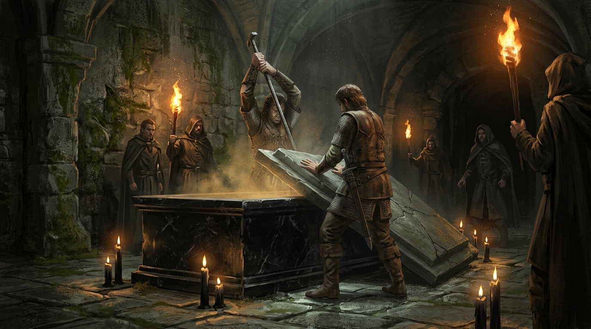
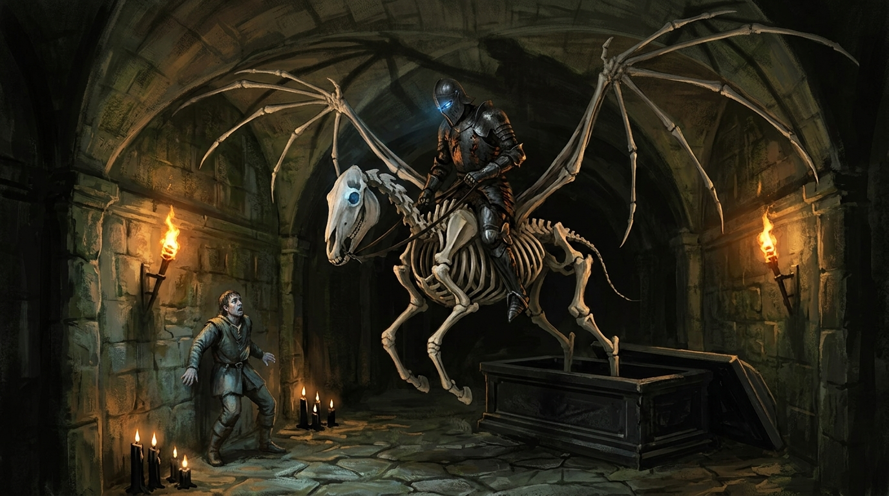
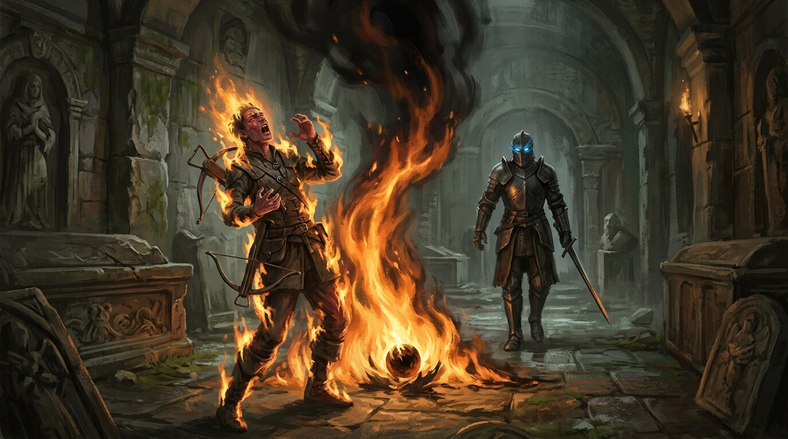
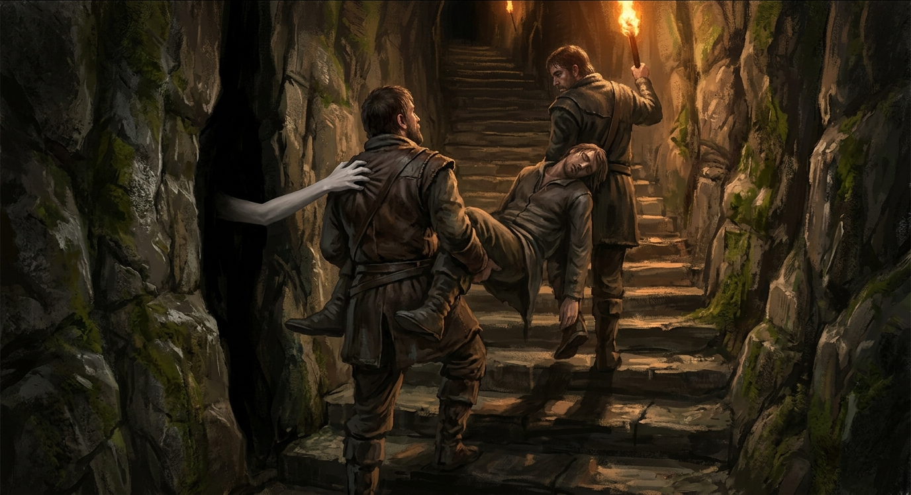
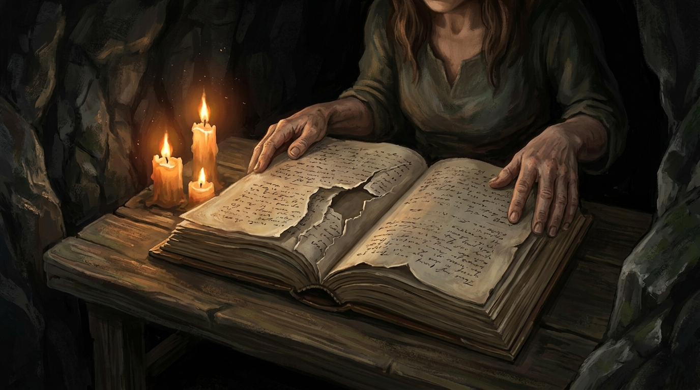
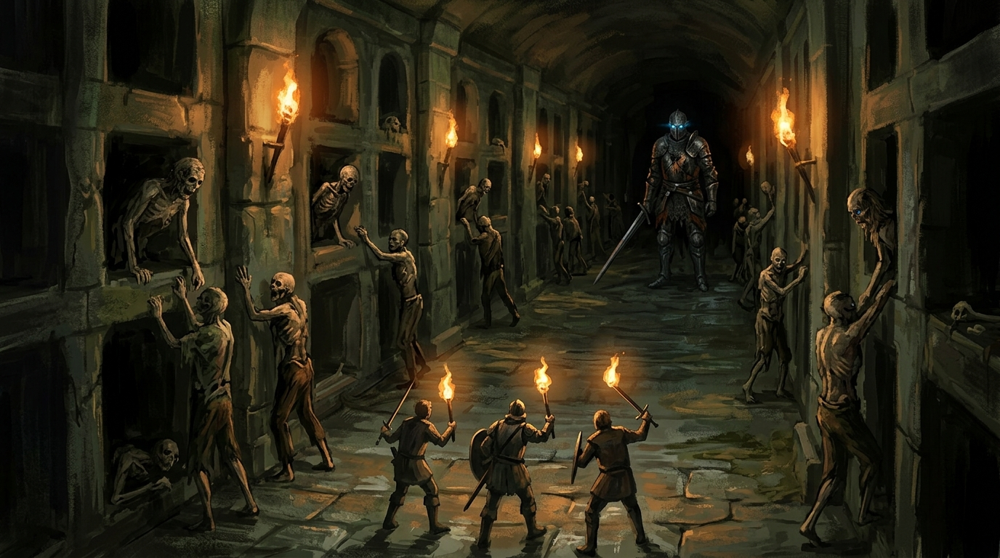
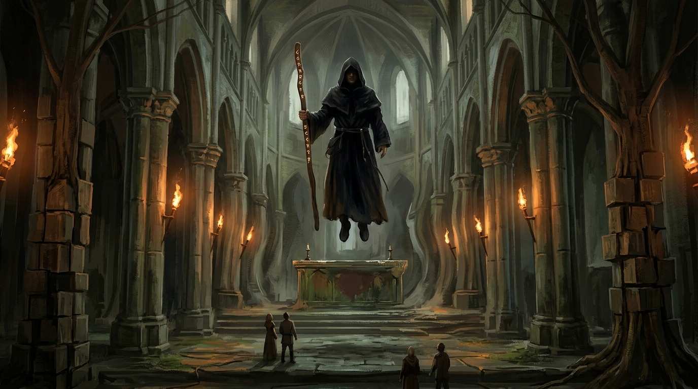

Voltaram ao túmulo negro decididos a abri-lo, e antes de abrir fizeram tudo certo. Olharam a pedra por fora à procura de marca de quem tivesse mexido nela, e não havia nenhuma, nem recente nem velha. Procuraram armadilha e não acharam. O que acharam foi o que já sabiam desde a primeira descida e ainda não tinham explicado: as velas negras em volta estavam acesas, e havia suportes queimados até o fim. Alguém trocava aquelas velas. Alguém frequentava aquele lugar.
As gravuras da tampa não ajudavam a ler nada, porque não eram escrita. Eram desenhos, a vida do morto contada em imagens, e a vida dele continuava depois que ele morria.
Hendrik continuou sentindo o que sentia desde a noite anterior, um incômodo e uma coceira que vinham de dentro da pedra, e resolveu tratar o incômodo do jeito dele. Chamou a luz sagrada sobre o túmulo. Todo mundo se afastou. A luz correu por cima da tampa, alastrando, e não aconteceu nada além de um tremor leve.
Foi o que bastou para o grupo decidir que estava seguro. Se nem aquilo despertava a pedra, então dava para empurrar.
Empurraram com um pé de cabra e força de dois. A tampa achou a folga, deslizou e caiu no chão.

Lá dentro estava o cavaleiro das gravuras. Armadura toda enegrecida, e nas falhas dela o osso à mostra, deitado de comprido. Em volta do corpo, pedras preciosas, joias e moedas de ouro, do jeito que se deixa oferenda para alguém que se enterra com honra. E, embaixo dele, uma escadaria descendo.
Não houve um segundo de silêncio reverente. Houve discussão sobre a joia. Alguém observou em voz alta que era esquisito ver um servo dos deuses violando um túmulo e querendo saquear, e quem estava sendo acusado respondeu que não era servo de deus nenhum e que não conhecia muito de religião. Um deles anunciou que não trocava dedo por dinheiro e que não arriscava a vida por aquilo. Outro, mais tarde, ia lamentar exatamente o oposto, que não tinha metido a mão antes.
Nesse meio-tempo Hendrik continuou incomodado, e chamou a luz sagrada uma segunda vez. Ela desceu direto sobre o corpo.
Os olhos do cavaleiro ficaram azuis.
O cavaleiro se levanta
Ele se ergueu do próprio túmulo sem pressa nenhuma, e a primeira coisa que fez foi chamar um cavalo. O bicho se montou no ar em osso, abriu asas nas costas e levantou voo com ele em cima.
Antes de descer, ele parou. Olhou Silva no fundo dos olhos, e Silva sentiu o olhar entrar mais fundo do que olhar entra, como se aquilo enxergasse a alma dele e estivesse anotando quem seria o próximo.
Depois disso ele desceu e foi cuidar do resto.
O que assustou não foi a violência. Foi a seleção. Ele derrubou Dariel com três golpes de espada, e a partir daí passou ao lado dos outros sem levantar a arma. Greed ficou colado nele, atacando, e ele não se importou. Andou. Deu seis passos até a saída da câmara como quem tem hora marcada em outro lugar.
E ficou claro por que ele tinha acordado, porque alguém disse em voz alta o que todos já tinham montado na cabeça: as sombras da noite anterior eram o que estava impedindo ele de voltar à vida. O grupo tinha limpado as sombras achando que eram o problema. As sombras eram a tranca.

A esfera, e o que sobrou
Silva era ladino, e ladino sobrevive por saber a hora de não estar onde a coisa cai. Ele desviou, e desviou bem, e não adiantou.
O cavaleiro é canhoto. Passou a espada para a mão esquerda e na direita acendeu uma esfera de fogo infernal, girando, e arremessou aos pés dele. A esfera caiu no chão e começou a emanar uma aura de fogo em volta, e o fogo incinerou Silva ali mesmo, de pé.
Ele gritou. Encolheu, encolheu, encolheu, e ainda tentou.
Quando a chama se apagou, o que sobrou da órbita de fogo foi uma energia negra que envolveu o corpo e terminou de definhá-lo. Não sobrou nada. Não sobrou o corpo, não sobrou o equipamento, não sobraram os virotes que ele carregava e contava um a um.
Quem viu concluiu, ali mesmo, que não tinha sobrado nem a alma, e que daquilo ninguém volta em outra vida.

A fuga, e o que se disse durante a fuga
O resto correu, e correu carregando gente. Dariel estava no chão com três cortes no corpo e sem conseguir abrir o olho, e dois deles pegaram um pelas pernas e outro pelos braços e saíram assim, com metade da velocidade que teriam sozinhos. Em algum ponto tropeçaram e derrubaram o corpo, que rolou.
O cavaleiro veio atrás. Andando. Não correu uma vez sequer, e é isso que ficou na cabeça de quem estava fugindo: a coisa que tinha acabado de matar um deles não achava necessário correr.
Um deles calculou que dava tempo de voltar e recolher alguma coisa do que tinha ficado para trás, e desistiu por conta própria antes de tentar. Não era mais questão de ouro.
E na correria começou a discussão que ia durar o resto da noite. Abrir o túmulo era uma coisa; jogar luz sagrada em cima de um morto era outra. Alguém tinha avisado antes, em voz alta, e ninguém tinha escutado, e agora todo mundo lembrava com precisão de quem tinha avisado o quê.
A mão na escada
Voltaram pelo mesmo caminho, subindo, na direção da bifurcação onde um lado ia dar no labirinto e o outro voltava para a entrada.
Foi ali que uma mão tocou um deles na escada, e uma voz de mulher falou baixo para virem por aquele lado.
Ninguém tinha visto a passagem. Ninguém tinha visto ela. Entraram porque nada do que estava atrás era melhor.

Era uma sala pequena, escondida atrás da pedra, com uma cama improvisada no chão de rocha, uma mesinha e velas acesas. Cabiam com dificuldade. A mulher fechou a passagem atrás deles e mandou sentar e respirar.
Chamava-se Mônica. Humana, alta, quase um metro e oitenta, forte de um jeito que a fez ser medida por comparação: era maior que dois deles juntos. Andava com duas espadas longas e usava as duas.
Estava ali havia uns cinco dias.
Alguém perguntou, ainda ofegante, se aquela porta segurava, se aquilo lá fora não atravessava a pedra com um chute. Ela disse que era um lugar seguro e mandou respirar de novo.
O nome
Ela não estava saqueando e não estava caçando. Estava pesquisando, e tinha vindo por causa de um livro.
Um Tomo dos Anciões, deixado com ela pelo antigo mestre. O que aquele tomo faz, disse ela, é levar quem o carrega até artefatos. Ele a tinha trazido para debaixo daquele morro, e ela vinha há dias tentando entender como um cavaleiro morto tinha ido parar ali.
Encontrou o túmulo e não abriu. Sabia que ele estava ali e não teve o menor interesse em confirmar levantando a tampa, e disse isso na cara deles com uma satisfação que não escondeu: ela não tinha sido idiota o suficiente para destampar aquilo. Depois foi honesta na outra direção, e reconheceu que eles tinham confirmado, sem querer, exatamente o que ela veio procurar.
E ela sabia o nome.
Chamava-se Erebus.
Pelo tomo dela, ele foi um cavaleiro cruel e sanguinário que tomou conta de um reino e manteve o poder daquele reino por muitos e muitos anos, até que uma ordem de clérigos amaldiçoou a existência dele e os deuses conseguiram terminá-lo. Aí o Deus da Morte o trouxe de volta, para se vingar da ordem que o tinha amaldiçoado.
A ordem foi exterminada.
O nome que o tomo dá a ele é ceifador de almas.
Havia uma coisa errada com aquele tomo, e ela mostrou: faltavam folhas. O caderno tinha espaço sobrando onde devia haver página, e a história de Erebus era justamente o trecho que morria no meio.

Os passos
Descansaram ali, e no meio do descanso escutaram.
Osso batendo em placa de metal, o som de quem anda de armadura sem o corpo dentro para amortecer. O ruído veio pelo corredor, chegou perto da porta escondida, ficou. Depois se afastou.
Ele foi e voltou. Passou duas vezes. Não abriu.
Quem tinha sido marcado pelo olhar dele sentiu, durante todo esse tempo, o mesmo olhar de novo, à distância, como se a coisa lá fora soubesse exatamente de que lado da pedra estavam. E depois parou de sentir.
O outro morador
Mônica contou a segunda coisa que sabia, e é a que mais envelheceu bem.
Tem mais alguém morando ali dentro, para além do labirinto. Ela nunca o viu. Nos dias de pesquisa, sempre que estava trabalhando perto do túmulo, percebia que alguém a espreitava, e a resposta dela era sempre a mesma: voltar e se esconder. Ela sentia de que lado ele estava. Quando ela mudava de corredor, a sensação mudava de lugar junto.
E ele mexia nas coisas dela. As tochas que ela deixava apagadas para trás, quando estava fugindo dos zumbis, apareciam acesas depois.
O grupo tirou dali uma conclusão que valia como plano: quem se esconde tem medo de alguma coisa. Erebus andava à vista, devagar, sem correr, porque podia matar qualquer um. Este outro se esconde. Logo este outro não é como Erebus.
Era uma dedução razoável, e o resto da noite serviu para mostrar de que tamanho ela estava errada.
O labirinto
Decidiram ir para o labirinto por eliminação. Sair pela frente era voltar para os zumbis e para a câmara aberta; e, pelo som dos passos, Erebus não tinha entrado no labirinto. Alguma coisa lá dentro não interessava a ele.
Mônica guiou até onde conhecia, que era pouco. Ela tinha entrado algumas vezes e nunca chegado ao fim.
O labirinto cobrava pedágio em detalhe. Havia placas de pressão no primeiro e no último degrau de cada escada, sempre nos dois lugares em que se pisa sem pensar. Foram desarmadas uma a uma com ferramenta de ladrão, e uma delas mordeu a ferramenta e obrigou a um conserto no meio do corredor.
Numa curva, água. Uma nascente correndo pela pedra, e no fundo dela um brilho amarelo que era ouro de verdade: três pepitas pequenas, tão pequenas que nem juntas dariam uma moeda.
Depois, um armário de pedra, protegido por lâmina retrátil e agulhas montadas numa chapa de metal. Dentro havia três tomos, um par de botas e um baú ornamentado e trancado que guardava três moedas de ouro.
As botas eram de couro, tamanho de gente, e tinham runas élficas gravadas de leve na lateral. Ninguém identificou o que faziam. Alguém calçou para descobrir e descobriu que serviam.
Os tomos é que eram o achado. Dois estavam em língua comum e traziam história geral, e o assunto dessa história geral era a Tormenta. O terceiro estava em élfico, e falava de quatro coisas: de uma igreja escondida nas pedras; de um bruxo que habita essa igreja; do cavaleiro da morte, com o nome dele escrito por extenso; e daquele lugar, com o labirinto e tudo.
Era a mesma história do tomo de Mônica. Era o trecho que tinha sido arrancado do dela.
E havia zumbis. Saíam das tumbas do labirinto de forma contínua, um atrás do outro, sem sinal de acabar, e por um tempo o grupo tratou aquilo como oportunidade e ficou derrubando. Pararam quando alguém olhou a fila e disse o que estava vendo: o último empilhado ali era o cavaleiro.

Foram embora dali imediatamente.
A Catedral da Penumbra
O corredor apertou tanto que se andava agachado, e depois abriu.
A caverna se alargava numa clareira de pedra, e no meio dela havia uma catedral. Gótica, pequena, erguida como estrutura imponente no coração da necrópole, com um cemitério inteiro em volta, sepulturas espalhadas até onde a tocha alcançava. A fachada tinha esculturas e relevos elaborados e uma beleza decadente que ainda funcionava. As torres estavam danificadas. As gárgulas, quebradas. As pedras, gastas, com rachaduras que contavam séculos.
Ela estava ali parada como sentinela solitária entre os túmulos.
Por dentro, silêncio sepulcral, quebrado só pelo sussurro das velas. Vitrais quebrados, nave com colunas, um mezanino vazado correndo por cima. O altar era de prata e ouro desbotados. No coração da nave, um órgão de tubos desmontado em pedaços, os metais deformados pela ferrugem, lembrando o esplendor que um dia teve.
E havia afrescos. Pinturas murais de cores apagadas, contando guerras e cenas de poder diante da grande Tormenta.
Foi a primeira vez que aquele nome apareceu para o grupo como coisa acontecida no mundo, pintada na parede de uma igreja enterrada, e não como palavra solta.
Numa das janelas altas havia uma figura de manto, observando. Sumiu quando apontaram para ela. Apareceu correndo pelo mezanino, a nove metros do chão. E então parou de fugir, e reapareceu acima do altar principal, de vestes negras, com um cajado de runas na mão, esperando que se aproximassem.
O que ele fez em vez de lutar
Ele não atacou ninguém.
Ele puxou a memória de dentro de cada um deles e pendurou a memória no ar, para todo mundo ver.
O primeiro a ser aberto foi Dariel. Era criança, no meio da floresta, com a mãe ensinando magia a ele. Todos viram a floresta. Todos viram a mãe. E então serpentes começaram a subir pelo corpo dela e a arrebentar os poros de dentro para fora, e ela gritou muitas vezes, e o rosto dela começou a derreter. As árvores em volta pararam de crescer para cima e passaram a crescer em cubos, e o mundo inteiro saiu do lugar.
Dariel entendeu que era ilusão e não conseguiu parar de ver.
Depois a visão trocou de dono. Uma vila, um porto, uma montanha, e dentro da vila uma biblioteca improvisada. O antigo mestre de alguém se aproximou dele, começou a falar, e começou a vomitar sangue. Caiu prostrado de dor e passou a sangrar por todos os orifícios, pelas orelhas, pelo nariz. Quem era o dono daquela lembrança ficou com medo de verdade, encolhido, olhando.
E depois veio a terceira, que era a pior porque não era pesadelo. Era coisa que aconteceu.
Uma clareira na floresta, à noite. Uma reunião do culto, daquele culto de que Dariel fez parte quando era menino. Uma pedra de sacrifício no meio, e pais sendo assassinados em cima dela, sangrando, gritando e pedindo ajuda.
E na lembrança dele, ali no meio, o cavaleiro do túmulo. Ele já tinha visto Erebus várias vezes, quando estava sendo treinado.
Foi então que a voz falou, em alto e bom som, para todos ao mesmo tempo:
Vêm até minha casa para causar transtorno, acordam um prisioneiro, e acham que vão sair impunes.

Prisioneiro.
Se aquilo era verdade, então o mausoléu inteiro estava sendo lido errado desde o começo. As velas negras acesas, os suportes queimados até o fim, alguém que voltava sempre para trocá-las. Não era zelo por um morto ilustre. Era manutenção de cadeia.
E o grupo tinha aberto a porta da cela com um pé de cabra e duas luzes sagradas.
O flash
A visão ficou turva. Eles se viram à distância, como pontos brilhantes muito longe. Depois um clarão, e acordaram.
Não estavam mais na catedral. Estavam numa sala redonda, de pesquisa, com uma mesa ao centro, e havia um alto-elfo em pé olhando para eles com as mãos na cabeça.
Ele estava tão perdido quanto o grupo. O que ele conseguiu explicar foi que vinha estudando o multiverso, com material herdado do antigo mestre dele, e que as pedras que estava usando na pesquisa puxaram pessoas de algum lugar que ele ainda não sabia qual era para dentro da sala onde trabalhava.
Ninguém entendeu nada, e a noite acabou ali.
Naquela mesma noite, embaixo do morro e a alguns corredores de distância, o túmulo negro continuava aberto, com a tampa no chão e a peça encravada por dentro da pedra ainda no lugar, exatamente onde estava quando ninguém tinha coragem de empurrar.
Ninguém voltou para pegá-la. Nunca.